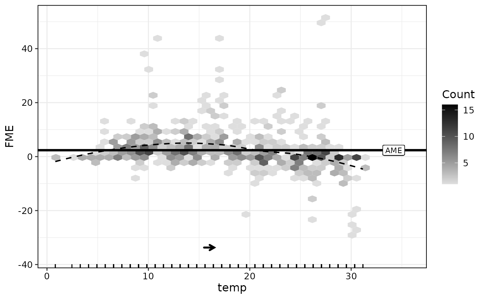
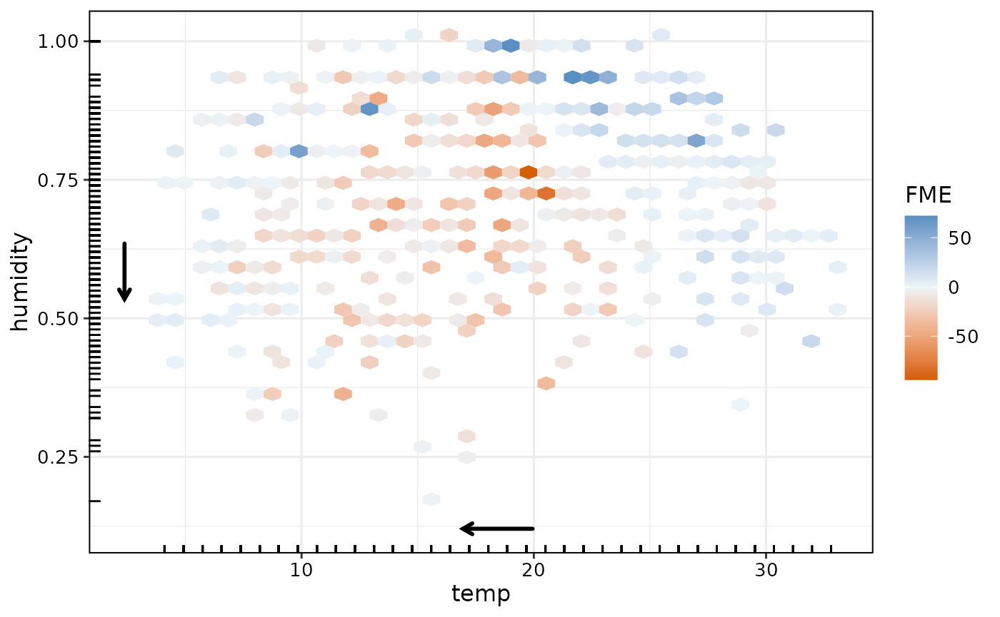
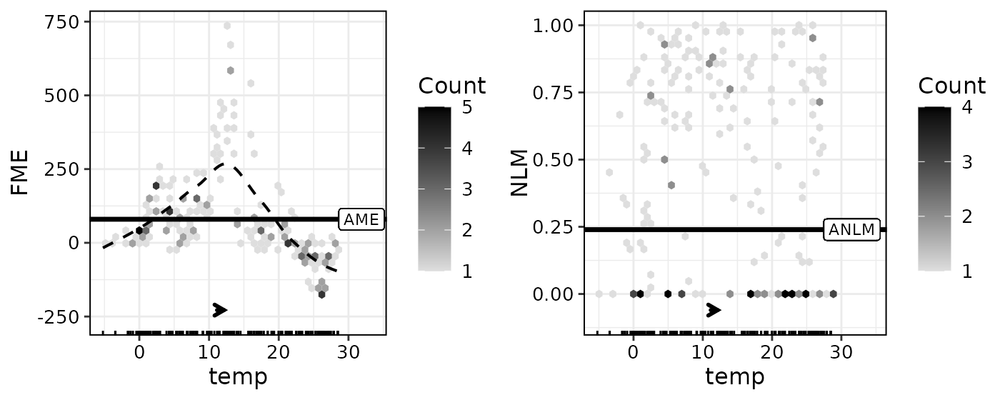
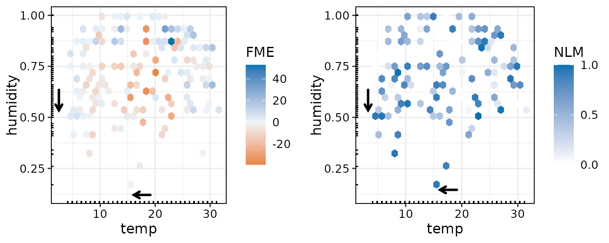
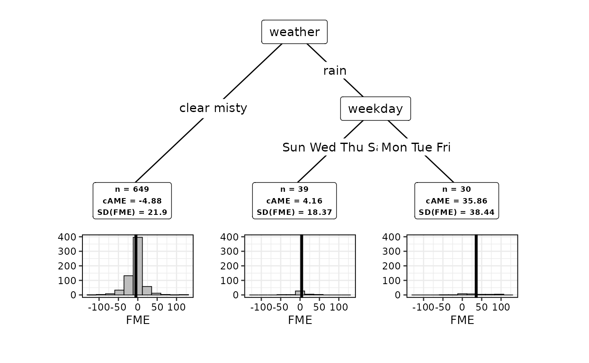

Introduction
The fmeffects package computes, aggregates, and
visualizes forward marginal effects (FMEs) for supervised machine
learning models. Put simply, an FME is the change in a model’s predicted
value for a given observation if the feature is changed by a certain
value. Read the article
on how FMEs are computed or the methods paper
for more details. Our website is the best way
to find all resources.
There are three main functions:
-
fme()computes FMEs for a given model, data, feature(s) of interest, and step size(s). -
came()can be applied subsequently to find subspaces of the feature space where FMEs are more homogeneous. -
ame()provides an overview of the prediction function w.r.t. each feature by using average marginal effects (AMEs).
Example
Let’s look at data from a bike sharing usage system in Washington,
D.C. (Fanaee-T and Gama, 2014). We are interested in predicting
count (the total number of bikes lent out to users).
## Classes 'data.table' and 'data.frame': 727 obs. of 11 variables:
## $ season : Factor w/ 4 levels "fall","spring",..: 2 2 2 2 2 2 2 2 2 2 ...
## $ year : Factor w/ 2 levels "0","1": 1 1 1 1 1 1 1 1 1 1 ...
## $ month : num 1 1 1 1 1 1 1 1 1 1 ...
## $ holiday : Factor w/ 2 levels "True","False": 2 2 2 2 2 2 2 2 2 2 ...
## $ weekday : Factor w/ 7 levels "Sun","Mon","Tue",..: 7 1 2 3 4 5 6 7 1 2 ...
## $ workingday: Factor w/ 2 levels "True","False": 2 2 1 1 1 1 1 2 2 1 ...
## $ weather : Factor w/ 3 levels "clear","misty",..: 1 2 1 1 1 2 1 2 1 1 ...
## $ temp : num 8.2 16.4 5.74 4.92 7.38 6.56 8.2 6.56 3.28 4.92 ...
## $ humidity : num 0.86 0.76 0.5 0.74 0.43 0.59 0.69 0.74 0.53 0.5 ...
## $ windspeed : num 0 13 13 9 13 ...
## $ count : num 3 1 64 94 88 95 84 9 6 77 ...
## - attr(*, ".internal.selfref")=<externalptr>FMEs are a model-agnostic interpretation method, i.e., they can be
applied to any regression or (binary) classification model. Before we
can compute FMEs, we need a trained model. In addition to generic
lm-type models, the fme package supports 100+
models from the mlr3, tidymodels and
caret libraries. Let’s try a random forest using the
ranger algorithm:
set.seed(123)
library(mlr3verse)
library(ranger)
task = as_task_regr(x = bikes, target = "count")
forest = lrn("regr.ranger")$train(task)Numeric Feature Effects
FMEs can be used to compute feature effects for both numerical and
categorical features. This can be done with the fme()
function. The most common application is to compute the FME for a single
numerical feature, i.e., a univariate feature effect. The variable of
interest must be specified with the features argument. This
is a named list with the feature names and step lengths. The step length
is chosen to be the number deemed most useful for the purpose of
interpretation. Most of the time, this will be a unit change, e.g.,
features = list(feature_name = 1). As the concept of
numerical FMEs extends to multivariate feature changes as well,
fme() can be asked to compute a multivariate feature
effect.
Univariate Effects
Assume we are interested in the effect of temperature on bike sharing
usage. Specifically, we set the step size to 1 to investigate the FME of
an increase in temperature by 1 degree Celsius (°C). Thus, we compute
FMEs for features = list("temp" = 1).
Note that we have specified ep.method = "envelope". This
means we exclude observations for which adding 1°C to the temperature
results in the temperature value falling outside the range of
temp in the data. Thereby, we reduce the risk of model
extrapolation.
plot(effects)
The black arrow indicates direction and magnitude of the step size.
The horizontal line is the average marginal effect (AME). The AME is
computed as a simple mean over all observation-wise FMEs. Therefore, on
average, the FME of a temperature increase of 1°C on bike sharing usage
is roughly 2.4. As can be seen, the observation-wise effects seem to
vary along the range of temp. While the FME tends to be
positive for lower temperature values (5-20°C), it turns negative for
higher temperature values (>20°C).
We can extract relevant aggregate information from the
effects object:
effects$ame## [1] 2.366779For a more in-depth analysis, we can inspect the FME of each observation in the data (excluding extrapolation points):
head(effects$results)## Key: <obs.id>
## obs.id fme
## <int> <num>
## 1: 1 2.674573
## 2: 2 2.895425
## 3: 3 5.898867
## 4: 4 -1.429239
## 5: 5 4.084969
## 6: 6 4.704511Multivariate Effects
Multivariate feature effects can be considered when one is interested
in the combined effect of two or more numeric features. Let’s assume we
want to estimate the effect of a decrease in temperature by 3°C,
combined with a decrease in humidity by 10 percentage points, i.e., the
FME for features = list(temp = -3, humidity = -0.1):
effects2 = fme(model = forest,
data = bikes,
features = list(temp = -3, humidity = -0.1),
ep.method = "envelope")For bivariate effects, we can plot the effects in a way similar to univariate effects (for more than two features, we can plot only the histogram of effects):
plot(effects2)
The plot for bivariate FMEs uses a color scale to indicate direction and magnitude of the estimated effect. We can see that FMEs tend to be positive for days with high temperature and high humidity. Let’s check the AME:
effects2$ame## [1] -2.687935It seems that a combined decrease in temperature by 3°C and humidity by 10 percentage points seems to result in slightly lower bike sharing usage (on average). However, a quick check of the standard deviation of the FMEs implies that effects are highly heterogeneous:
sd(effects2$results$fme)## [1] 24.08741Therefore, it could be interesting to move the interpretation of
feature effects from a global to a regional perspective via the
came() function.
Non-Linearity Measure
The non-linearity measure (NLM) is a complimentary tool to an FME. Any numerical, observation-wise FME is prone to be misinterpreted as a linear effect. To counteract this, the NLM quantifies the linearity of the prediction function for a single observation and step size. A value of 1 indicates linearity, a value of 0 or lower indicates non-linearity (similar to R-squared, the NLM can take negative values). A detailed explanation can be found in the FME methods paper.
We can compute and plot NLMs alongside FMEs for univariate and
multivariate feature changes. Computing NLMs can be computationally
demanding, so we use furrr for parallelization. To
illustrate NLMs, let’s recompute the first example of an increase in
temperature by 1 degree Celsius (°C) on a subset of the bikes data:
effects3 = fme(model = forest,
data = bikes[1:200,],
feature = list(temp = 1),
ep.method = "envelope",
compute.nlm = TRUE)Similarly to the AME, we can extract an Average NLM (ANLM):
effects3$anlm## [1] 0.4648A value of 0.5 indicates that a linear effect can describe some but not all of the change of the prediction function along the multivariate feature step. This means we should be weary of interpreting the FME as a linear effect.
If NLMs have been computed, they can be visualized alongside FMEs
using with.nlm = TRUE:
plot(effects3, with.nlm = TRUE)
Equivalently, let’s compute an example with bivariate FMEs with NLMs:
effects4 = fme(model = forest,
data = bikes[1:200,],
features = list(temp = -3, humidity = -0.1),
ep.method = "envelope",
compute.nlm = TRUE)
plot(effects4, bins = 25, with.nlm = TRUE)
Categorical Effects
For a categorical feature, the FME of an observation is simply the
difference in predictions when changing the observed category of the
feature to the category specified in features. For
instance, one could be interested in the effect of rainy weather on the
bike sharing demand, i.e., the FME of changing the feature value of
weather to rain for observations where weather
is either clear or misty:
##
## Forward Marginal Effects Object
##
## Step type:
## categorical
##
## Feature & reference category:
## weather, rain
##
## Extrapolation point detection:
## none, EPs: 0 of 657 obs. (0 %)
##
## Average Marginal Effect (AME):
## -55.3083Here, the AME of rain is -55. Therefore, while holding
all other features constant, a change to rainy weather can be expected
to reduce bike sharing usage by 55.
For categorical feature effects, we can plot the empirical distribution
of the FMEs:
plot(effects5)
Model Overview with AMEs
For an informative overview of all feature effects in a model, we can
use the ame() function:
overview = ame(model = forest, data = bikes)
overview$results## Feature step.size AME SD 0.25 0.75 n
## 1 season spring -29.472 31.5101 -39.955 -5.5139 548
## 2 season summer 0.4772 22.5212 -9.0235 11.6321 543
## 3 season fall 11.7452 28.5851 -2.4282 34.1763 539
## 4 season winter 15.5793 24.6394 1.6525 26.2254 551
## 5 year 0 -99.038 67.1788 -157.0608 -20.0628 364
## 6 year 1 97.0566 60.521 21.9401 148.0847 363
## 7 month 1 4.0814 13.3513 -1.2566 7.459 727
## 8 holiday False -1.2178 21.6103 -9.1095 9.8232 21
## 9 holiday True -13.738 25.3496 -32.6323 6.2019 706
## 10 weekday Sat -55.0908 49.6534 -87.6489 -15.8843 622
## 11 weekday Sun -85.1527 57.7791 -122.1504 -31.8105 622
## 12 weekday Mon 10.7224 29.2179 -8.4101 30.4207 623
## 13 weekday Tue 17.9396 25.728 1.1959 32.5073 625
## 14 weekday Wed 20.4025 23.1599 1.3386 32.8358 623
## 15 weekday Thu 19.4455 24.1105 -0.3097 33.4997 624
## 16 weekday Fri 1.7712 35.3088 -24.8956 29.5147 623
## 17 workingday False -204.1875 89.3882 -257.144 -142.4332 496
## 18 workingday True 161.0619 62.5733 118.9398 209.6916 231
## 19 weather clear 26.1983 41.7886 3.5991 25.9257 284
## 20 weather misty 3.023 32.8661 -9.1498 0.973 513
## 21 weather rain -55.3083 53.0127 -94.4096 -5.481 657
## 22 temp 1 2.3426 7.1269 -0.4294 4.5534 727
## 23 humidity 0.01 -0.2749 2.626 -0.3249 0.3504 727
## 24 windspeed 1 0.0052 2.4318 -0.1823 0.2318 727This computes the AME for each feature included in the model, with a
default step size of 1 for numeric features (or, 0.01 if their range is
smaller than 1). For categorical features, AMEs are computed for all
available categories. Alternatively, we can specify a subset of features
and step sizes using the features argument:
overview = ame(model = forest,
data = bikes,
features = list(weather = c("rain", "clear"), humidity = 0.1),
ep.method = "envelope")
overview$results## Feature step.size AME SD 0.25 0.75 n
## 1 weather rain -55.3083 53.01272 -94.40958 -5.48097 657
## 2 weather clear 26.19828 41.78861 3.59911 25.92567 284
## 3 humidity 0.1 -7.75386 17.23894 -8.54966 1.32707 640Again, note that we advise to set ep.method = "envelope"
so we avoid model extrapolation.
Regional Interpretations
We can use came() on a specific FME object to compute
subspaces of the feature space where FMEs are more homogeneous. Let’s
take the effect of a decrease in temperature by 3°C combined with a
decrease in humidity by 10 percentage points, and see if we can find
three appropriate subspaces.
##
## PartitioningCtree of an FME object
##
## Method: partitions = 3
##
## n cAME SD(fME)
## 718 -2.687935 24.08741 *
## 649 -4.881628 21.90090
## 39 4.164823 18.36672
## 30 35.860363 38.43502
## ---
## * root node (non-partitioned)
##
## AME (Global): -2.6879As can be seen, the CTREE algorithm was used to partition the feature space into three subspaces. The standard deviation (SD) of FMEs is used as a criterion to measure homogeneity in each subspace. We can see that the SD is substantially smaller in two of the three subspaces when compared to the root node, i.e., the global feature space. The conditional AME (cAME) can be used to interpret how the expected FME varies across the subspaces. Let’s visualize our results:
plot(subspaces)
In this case, we get a decision tree that assigns observations to a
feature subspace according to the weather situation
(weather) and the day of the week (weekday).
The information contained in the boxes below the terminal nodes are
equivalent to the summary output and can be extracted from
subspaces$results. The difference in the cAMEs across the
groups means the expected ME is estimated to vary substantially in
direction and magnitude across the subspaces. For example, the cAME is
highest on rainy days. It turns negative on non-rainy days.
References
Fanaee-T, H. and Gama, J. (2014). Event labeling combining ensemble detectors and background knowledge. Progress in Artificial Intelligence 2(2): 113–127
Vanschoren, J., van Rijn, J. N., Bischl, B. and Torgo, L. (2013). Openml: networked science in machine learning. SIGKDD Explorations 15(2): 49–60